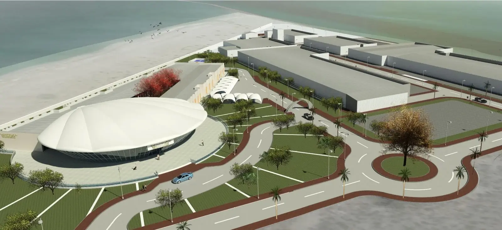
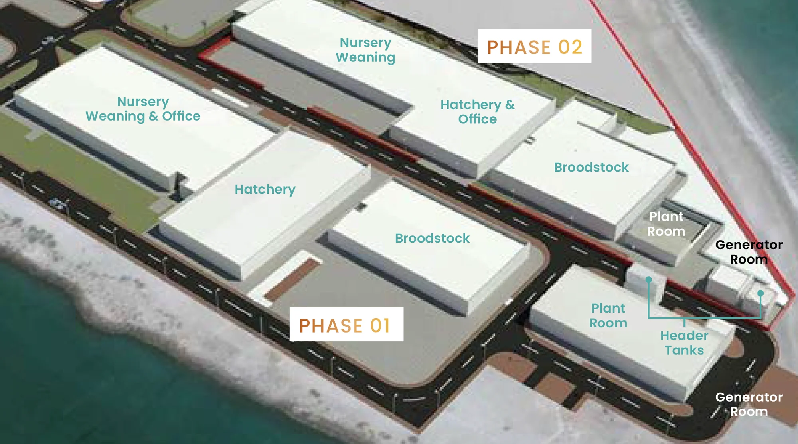

Sheikh Khalifa
Marine Research Centre
GA has been operating the Sheikh Khalifa Marine Research Centre [SKMRC] since November 2025. This asset represents the pinnacle of Middle Eastern hatchery technology and design.
Innovation at
its heart.
The Marine Innovation Park
In addition to hatchery and nursery facilities, SKMRC also hosts an innovation park complete with 14 laboratories and a science discovery division suitable for research and younger audiences.

Key Stats
- Fourteen dedicated laboratories provisioned for compliance with ISO/IEC 17025 international standards for testing and calibration laboratory competence
- 1,200 m² of office space
- Fully furnished staff canteen and academic spaces
Hatchery infrastructure
Approximately 18,000 m² of aquaculture hatchery space, dedicated in two production streams known as phase one and phase two.
Broodstock Management
In SKMRC the team manages and breeds the following broodstocks: Seabream, Hamour, Shaari, Mangrove Snapper, Mullet, Cobia, and Naisrah.
Larval Rearing Systems
- Production of 3 species throughout the year
- Annual production capacity of 20+ million larvae
Nursery Operations
- Currently focusing on Hamour, Red Snapper and Shaari
- Target production of 20 million fry in 2026
Sustainable feed systems
Live Feed Production
- Rotifers
- Artemia
- Copepods
Algae Cultivation
- 7 species of live algae production, year-round
Laboratories and diagnostics
Microbial Testing Capabilities Include:
- Viruses
- Bacteria
- Parasites
- Water quality parameters
Phase 01 · Phase 02
Hatchery, broodstock, nursery & weaning buildings with plant rooms, header tanks and generator rooms.

Interested in Sheikh Khalifa Marine Research Centre?
Government, research and commercial partners are welcome to get in touch about collaboration and site visits.